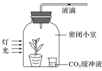

生物步步高10.光合作用与细胞呼吸的综合应用
判断：有氧呼吸第二阶段产生的 全部来自丙酮酸。 错误，部分来自水。
利用量是真光合还是净光合？ 真光合。
固定量是真光合还是净光合？ 真光合。
消耗量是真光合还是净光合？ 真光合。
植物 吸收量是真光合还是净光合？ 净光合。
! !判断：随着光照强度的增强，液滴向右移动的距离逐渐增大。 错误，在达到光饱和点前成立。
同步
如何表述细胞有氧呼吸速率？ （黑暗条件下），单位时间内，（单位面积内）的 释放量、 吸收量或有机物消耗量。
实验设计答题思路？ 考虑取材、自变量、因变量、无关变量。